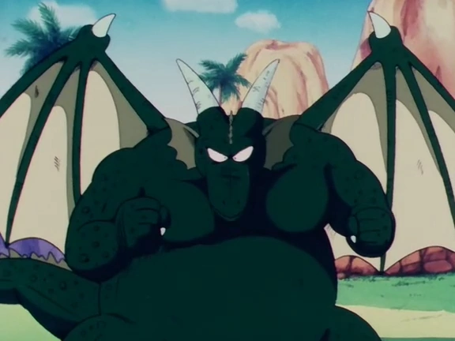

Personagens
-
Dragon Ball
-
Goku
Goku é o principal protagonista do meta-séries Dragon Ball. Um Saiyajin, enviado à Terra como um bebê com a missão de destruí-la, Goku se tornou um garoto de bom coração depois que ele bateu a cabeça e foi adotado pelo vovô Gohan.
-
Bulma
Bulma possui um grande carisma ,senso de aventura e um incomparável intelecto,por sua personalidade muito feminina e moleca ao mesmo ela tende a ser temperamental, mimada e as vezes birrenta.Graças a ser filha do fundador da Corporação Cápsula tem a sua disposição toda a tecnologia que seu pai inventou .
-
Oolong
Oolong é um porco usando um uniforme do exército da China Comunista implica a mensagem de Akira Toriyama por trás do personagem. Também, Oolong tem uma atitude escura em suas primeiras aparições. Todo esse conceito é apagado no começo do 21º Torneio de Artes Marciais.
-
Yamcha

Yamcha é originalmente caracterizado como um guerreiro mortal, que não teme nada além de falar com mulheres. Após se tornar amigo de Goku e os outros, sua personalidade continua a mesma, mas se preocupa mais com as pessoas que ele protege.
-
Mestre Kame
Mestre Kame é um antigo e sábio mestre de artes marciais, e o primeiro personagem a usar o conhecido Kamehameha. Embora ele pareça frágil, Kame é na verdade um guerreiro poderoso. Ele treinou Vovô Gohan, Rei Cutelo, Goku, Kuririn e Yamcha. Mestre Kame é ambos os arquétipos velho sábio e velho pervertido, o último sendo típico de mangas "shonen". Às vezes, ele fica irritado, e produz alívio cômico.
-
Pual
Pual atendia a Escola de Transformação do Sul, junto com Oolong que fazia bullying com ele. Algum tempo depois disso, Pual encontrou Yamcha e se tornou seu companheiro no Deserto Diablo. Quando eles encontraram Goku e Bulma pela primeira vez, junto com Oolong, Pual diz que ele e Yamcha estão juntos por exatos dois anos, um mês, e três dias. Os dois eram originalmente um par de bandidos do deserto, roubando cápsulas e dinheiro de viajantes que cruzavam a área onde eles viviam.
-
Imperador Pilaf
Imperador Pilaf é um anãozinho azul que deseja nada além de poder e sonha dominar o mundo. Ele tem um império que consiste de seu castelo, e seus dois seguidores, Shu e Mai. Embora pareça incompetente, Pilaf tem um número de recursos ao seu comando, como seu próprio castelo, avião, armas a laser, e uma base flutuante high-tech.
-
Shu
Shu é um cão antropomórfico (Shiba Inu) e lacaio ninja do Imperador Pilaf. Ele e Mai normalmente trabalham juntos para realizar o trabalho de seu chefe mal-humorado. Como qualquer coisa que envolva o Imperador Pilaf, Shu age quase inteiramente como alívio cômico. Ele geralmente tem Mai como um contraponto à sua personalidade cómica, onde Mai está sempre em uma atitude séria e geralmente armada com armamento convencional.
-
Mai
Mai é a subordinada do Imperador Pilaf. Ela sempre trabalha com Shu e, embora seja inteligente, os dois sempre falham seus objetivos. Ela é uma inimiga bonita e calculadora que sempre usa armas e tecnologia; seu tom sério é um contraste com a personalidade cômica de Shu. Mai é leal ao Imperador Pilaf e fielmente fica sob seu comando por toda a série independente da situação.
-
Kuririn
Originalmente uma pessoa invejosa e egoísta, Kuririn não respeitava regras quando é confrontado com o treinamento de Kame. Após uma curta rivalidade entre os dois (anos depois, Kuririn admite que ele odiava Goku no começo), ele vira o melhor amigo de Goku e sua personalidade invejosa e egoísta se torna mais bondosa e mais generosa. Kuririn é usado como um alívio cômico pelo autor, e foi morto pelo maior número de vezes na série Dragon Ball.
-
Jackie Chun
Jackie Chun é um disface criado por Mestre Kame, um dos protagonistas de suporte na série Dragon Ball.
-
Nam
Nam faz sua primeira aparição na saga do Torneio entre os finalistas. Logo depois, ele luta com Ranfan no primeiro round. O corpo sensual de Ranfan faz Nam quase perder a luta, mas ele fecha seus olhos e usa seus outros sentidos para derrotá-la. Sua próxima luta é contra Goku, e enquanto é uma luta intensa com ele usando seu ataque principal, a técnica Cross Arm Dive, que faz a pessoa desmaiar por 10 dias, ele perde no final. Ele competiu por causa ele precisava do dinheiro para comprar água; de onde ele vinha, tinha uma grande seca, e ele foi mandado para arranjar uma solução.
-
Lunch
Lunch é uma mulher com uma doença estranha que causa ela a mudar entre duas personalidades diferentes sempre que ela espirra. Sua primeira personalidade é uma mulher gentil de cabelo azul, que tem o coração puro. A sua outra personalidade é uma mulher raivosa e loira, que comete crimes por dinheiro e gosta de atirar nas pessoas. Nenhuma das personalidades de Lunch se lembra das ações das outras, ou sequer o que elas disseram.
-
General White
White é o mais velho dos oficiais conhecidos. Embora não seja um estrategista brilhante, ele é observador e tem conclusões rápidas, e é o único oficial a descobrir a fraqueza principal de Goku: sua cauda.
-
Coronel Silver

Coronel Silver tem um pequeno papel no manga Dragon Ball, mas ele teve um papel consideravelmente maior no anime. Isso é porque a Força Red Ribbon foi introduzido um pouco mais cedo no anime e a Toei Animation criou vários episódios filler involvendo Coronel Silver e Imperador Pilaf antes do próximo capítulo de Dragon Ball ser lançado para que os animadores possam continuar a história sem passar o manga.
-
Ninja Purpura
Púrpura é bem confiante em suas habilidades, pensando que ninguém pode derrotar suas habilidades ninjas. Quando luta com uma ameaça séria, porém, ele se torna covarde, e usa táticas desesperadas. Púrpura também é mostrado sendo um pervertido; é revelado que as fotos caídas são na verdade as irmãs do General White, a quem ele deveria "mostrar a base" mas acabou tirando foto delas nuas. Para provar isso ainda mais, ele também possui uma coleção de revistas pornôs escondidas em sua casa; Goku as encontra quando ele estava tentando achar Púrpura.
-
Android 8
Androide 8 é introduzido por Ninja Púrpura, que quer usá-lo contra Goku, após ele e seus irmãos falham em derrotar Goku, que é muito mais forte. Porém, 8 recusa a batalhar com o menino. Quando Ninja ameaça explodir 8 com o controle remoto, Goku tira o controle dele e faz o Ninja desmaiar. Goku apelida Androide 8 de "Oitavo" (Hacchan), e ele se torna amigo de Goku.
-
Sargento Metálico
Sargento Metálico aparece pela primeira vez quando Goku avança pela Torre Músculo para salvar o Prefeito da Vila Jingle. Quando Goku chega no andar de Metálico, General White o ordena a matar Goku, o que ele tenta fazer esmagando Goku.
-
Comandante Red
Red dirige o Quartel-General com punho de ferro e pune a incompetência de seus subordinados com a execução. O objetivo de Red é possuir as Esferas do Dragão, então ele envia seus homens pelas várias regiões onde as esferas estão sendo indicadas no seu radar, mas não é tão preciso quanto o radar construído por Bulma. O Comandante Red também possuía muito poder e muito dinheiro, mas um de seus problemas era sua altura. Para este complexo, ele tentou reunir as esferas do dragão para cumprir seu desejo de ser mais alto.
-
Conselheiro Black
Durante a missão do Comandante Red de adquirir todas as sete Esferas do Dragão, Black o ajuda com pequenas coisas, como lhe dar seus charutos ou cumprimentar sua inteligência, enquanto é insultado por Red constantemente, principalmente quando Black fica muito perto de Red, pois Red não gosta de parecer uma criança por causa de sua altura.
-
Chi-Chi
Chi-Chi é a filha do Rei Cutelo e se torna uma das personagens principais da série. Chi-Chi é uma garota enérgica e cheia de vida. Durante o torneio, Chi-Chi, rapidamente se apaixona por Goku. Ela expressa seu interesse em se casar com Goku quando eles são crianças. No entanto, Goku, que é ingênuo e não entende completamente o conceito de casamento, não compreende totalmente os sentimentos românticos de Chi-Chi.
-
General Blue
General Blue é um único oficial Red Ribbon com uma idade confirmada; ele tinha 28 anos quando foi morto por Tao Pai Pai. Ele também tem uma saga inteira focada nele. General Blue é bem persistente e leal à Red Ribbon, e ele segue Goku por mais de sete episódios de obstáculos para obter as Esferas do Dragão, até retornando ao Quartel General, para que ele pudesse dar ao Comandante Red o Radar do Dragão, embora falhasse em pegar as Esferas.
-
Tao Pai Pai
Tao é extremamente sádico e mau em suas ações, tendo prazer em matar pessoas e não vendo suas missões como apenas "trabalhos", mas como um meio de se divertir-se. Ele não tem nenhum problema em matar crianças, evidente quando ele tenta matar Goku quando criança e ele diz que Upa deveria ser sortudo quando ele sobreviveu logo após tentar vingar seu pai.
-
Bora
Bora é um homem alto e musculoso que mora na Terra Sagrada de Karin com seu filho Upa, num tipi na base da Torre Karin. Bora se tornou um alvo da Força Red Ribbon quando ele encontrou a Esfera de Quatro Estrelas cair de um vulcão em erupção enquanto protege seu filho Upa das rochas que caíam.
-
Upa
Upa é um membro da tribo nativa que servem de guardiões da Torre Karin. Seu pai, Bora, é o chefe da tribo. Com cinco anos de idade, ele é tímido e um pouco covarde, mas como conseguiu montar na Nuvem Nimbus, ele tem um coração puro. Ele admira seu pai Bora e seu novo amigo Goku e se esforça para ser como eles.
-
Mestre Karin
Mestre Karin é um ser com forma de gato, considerado protagonista de suporte, tanto no mangá como no anime de Dragon Ball. Teve aparições em Dragon Ball Clássico, Z, Super e uma pequena aparição no GT. Karin é muito sábia e tem mais de 800 anos, vive em uma torre gigante, além de ser mestre em artes marciais. Mestre Karin já treinou 7 discípulos, sendo estes: Mestre Kame, Goku, Tenshinhan, Kuririn, Yamcha, Chaos e Yajirobe.
-
Vovó Uranai
Uranai é muito rude com as pessoas, até seu próprio irmão Mestre Kame. Uranai também gosta de subestimar pessoas que lutam com seus cinco guerreiros, ela pensava que Goku, Yamcha e Kuririn não tinham a menor chance de derrotá-los.
-
Vovô Gohan

Vovô Gohan, também conhecido apenas como Gohan, é o avô adotivo Terráqueo de Goku. Ele é muitas vezes referida como "vovô" Gohan para separá-lo do filho de Goku, Gohan, nomeado em homenagem a ele. Vovô Gohan é um tipo de homem amoroso, gentil o suficiente para adotar Goku quando ele o encontrou na floresta. É provavel que muito da personalidade e da moralidade de Goku veio dele. De acordo com Goku, Vovô Gohan tinha boas maneiras e agiu muito bem para senhoras.
-
Tenshinhan
Tenshinhan é um poderoso guerreiro, um mestre de artes marciais, e um dos mais poderosos terráqueos. Por causa de sua educação dura, Tenshinhan é inicialmente frio e sem coração, pensando em nada além de explorar inocentes e infligir dor. Porém, Mestre Kame e Goku eventualmente o ajudam a ver a insensatez dos ensinamentos de seu mestre, e se torna um aliado confiável. Pela grande maioria de sua vida adulta, ele batalha junto com outros Guerreiros Z quando ameaças maiores acontecem na Terra, e frequentemente engajando corajosamente com inimigos bem mais fortes que ele mesmo.
-
Chaos
Chaos era um aluno de Mestre Tsuru, assim como Tenshinhan, e ele é especialista em poderes como telepatia e telecinese. Ele é introduzido ao fim da saga Red Ribbon no anime. Quando ele era um aluno da Escola Garça, ele formou uma rivalidade com o aluno da Escola Tartaruga Kuririn por um tempo durante o 22º Torneio de Artes Marciais. Junto com Tenshinhan, ele logo muda de lado após ver a loucura nos ensinamentos de seu mestre, e se torna um aliado confiável e um Guerreiro Z.
-
Mestre Tsuru
Assim como seu irmão mais novo, Tsuru é extremamente sádico e de natureza imperdoável, sem morais de matar quem quer que esteja em seu caminho, até seus estudantes. Também como seu irmão, Tsuru é extremamente confiante em suas habilidades e não acredita que há outros melhores. Ele também tenta ostenta sua superioridade sempre que pode; especialmente com Kame, clamando que seus estudantes são melhores que os de Kame, simplesmente porque ele os treinou.
-
Piccolo Daimaoh

Sendo o mal concentrado que vivia no Namekuseijin, a personalidade de Piccolo Daimaoh é o oposto completo de sua parte boa, Kami-Sama; ele é apresentado como sendo frio, impiedoso, sadista, e um vilão com sede de poder com nenhum senso de compaixão. Ele demonstrou em várias ocasiões que ele é capaz de fazer tudo para cumprir seus objetivos, não importa quantas vidas inocentes seriam perdidas no processo.
-
Tamborim
Tamborim nasceu logo após Piccolo Daimaoh ser libertado por Pilaf. Sob ordens de Piccolo, Tamborim sai para assassinar todos os competidores dos últimos três Torneios de Artes Marciais, que possam ser uma ameaça para Piccolo, e coletar as Esferas do Dragão que encontrar no caminho. Sua primeira vítima é Kuririn, quem ele confronta logo após o fim do 22º Torneio de Artes Marciais, quando Kuririn volta para pegar as coisas que Goku esqueceu lá.
-
Yajirobe
Yajirobe é bem anti-social, preferindo ficar sozinho para que ele possa comer pacificamente, e às vezes sendo rude para outras pessoas. Yajirobe gosta de consumir grandes quantidades de comida, e tem uma atitude mal-humorada para aqueles que o atrapalham ou o distraem. Ele gosta de comer porco selvagem assado e possui uma afinidade para pãezinhos de porco cozidos no vapor (butaman em japonês);
-
Címbalo
Címbalo é um Namekuseijin Mutante, terceiro filho de Piccolo Daimaoh, e um antagonista de Dragon Ball. A primeira tarefa de Címbalo é reunir as Esferas restantes para que seu pai possa desejar juventude e poder restaurados. Depois que descobre a Esfera mais próxima, parte em busca dela.
-
Goku Jovem

Após três anos treinando com kami-sama, Goku, agora com 18 anos, reencontra seus amigos no Torneio de Artes Marciais. Yamcha, Kuririn e Tenshinhan também participam das batalhas.
-
Piccolo
Piccolo é a reencarnação Namekuseijin e filho final de Piccolo Daimaoh e também o vilão final no anime Dragon Ball, e um protagonista em Dragon Ball Z, Dragon Ball GT, e Dragon Ball Super. Piccolo nasceu para vingar a morte de seu pai pelas mãos de Goku. Após ser derrotado por Goku, Piccolo é logo forçado a fazer uma aliança com Goku e seus amigos contra inimigos mais perigosos.
-
Kami-Sama
Não é conhecida qual era a sua personalidade era originalmente, mas após se livrar de sua parte má, ele se torna um Namekuseijin pacífico normal conhecido como Kami-Sama. Embora ele conte como um Namekuseijin Guerreiro, ele desiste das artes marciais quase completamente após se tornar Deus da Terra (embora ele depois lute com Piccolo Jr. como Shen e Garlic Jr. como si mesmo). De acordo com Mestre Karin, Kami-Sama não gosta de visitantes e manda de volta qualquer foguete tentando alcançá-lo (implicando que isso já aconteceu).
-
Chi-Chi Jovem
Quando criança Goku prometeu se casar com ela, Chichi costumava ser tímida e muito gentil. Porém, quando adulta, a mesma se torna extremamente temperamental e irrita-se facilmente, tornando-a uma mãe super-protetora e arrogante.
-
Kuririn Jovem
Após a vitória de Goku sobre Piccolo, Kuririn é ressuscitado por Shenlong. Depois de mais três anos, Kuririn entra no 23º Torneio de Artes Marcis. Porém, desta vez ele perde nas quartas-de-finais para Piccolo Junior.
-
Sr. Popo
Senhor Popo é uma divindade assistente que cuida da Plataforma Celeste. Ele fica lá eternamente como o jardineiro e assistente, mas ele pode viajar por todo o mundo se a ocasião necessitar, usando um carpete mágico para Teletransporte. Embora ele aparentemente não envelheça, o Sr. Popo é bem velho, tendo servido Kami-Sama, o Deus da Terra, por centenas de anos, e também servindo o antecessor de Kami-Sama, e vários outros deuses da Terra no passado distante.
Mais personagens em breve.
-